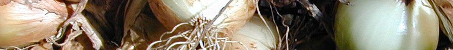
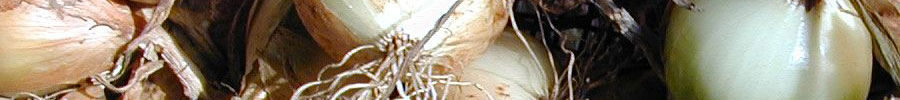

| News | Events | Resources | About | Contact |

|
||||||
| ...promoting investment in environmentally, socially and culturally sustainable food systems | ||||||
| ||||||
 | ||||||
|
Glossary Artisanal - Non-industrial; made by hand. Backward-Linking Businesses - Businesses from which products are bought and their suppliers. Commodified Food - Industrially produced food sold in markets governed by undifferentiated price competition. Commoditize - To make a product or service into a commodity. Community-Based - Having strong ties to the community by virtue of participation in the community. Community Building - Intentional development of the community’s resources, especially its social resources. Community Stewardship - Caring for the community’s resources by the community. Conscious Buying - Attention to the social and environmental impacts of purchases. Co-Producers - Businesses that contribute to the production of food through direct relationships with producers. Dollar Flows - The pattern of economic transactions between enterprises and between enterprises and consumers over time. Economic Sustainability - The ability to maintain a just and healthy economy over the long term. Food Dollar - The portion of a household’s, enterprise’s or community’s budget spent on food. Food Dollar Multiplier - Measure of the impact of spending that goes for food inputs to directly-linked suppliers. Foodshed - The immediate bioregion from which foodstuffs flow into a consuming market. Food Value Chain - The businesses involved in the production, processing, distribution and retailing of farm and food products. Impact Analysis - Analysis of the economic impact of an increase or decrease in spending. Indirect Spending - The sum of spending by all backward-linking businesses. Induced Spending - The sum of household spending of the income earned in food production and supporting industries. Institutional Food Service - Food service in end use institutions such as hospitals and schools. Leakages (or Spending Leakages) - Dollars leaving an economy from purchases made from businesses located outside the community. Linkages - Connections or relationships between enterprises and between enterprises and consumers. Locally Directed Spending - Purchasing from community-based enterprises in preference to buying from businesses headquartered outside the region, but which may have local operations, such as a retail store. Local Food Economy - The network of community-based food businesses. Local Multiplier - Measure of the economic impact of spending on locally produced goods and services within a community. Multiplier - Measure of the economic impact of an initial round of spending and successive rounds of re-spending the initial dollars within a community. Participatory Action Research - Research which gives stakeholders an active role in guiding the research. Purveyor - Business that furnishes food to the general public, such as a restaurant or grocery store. Resource Flows - The exchange of resources, such as money, skills, and information, over time. Small-Lot Variety - Variability from lot to lot of product produced in small lots. Stakeholders - People who has a share or an interest, as in an enterprise. |
Why is Slow Money important? There are many local food producers, food chain contributors and consumers who believe in sustainable food production, such as organic farming and free range livestock. Sustainable production typically provides for returns on investment based on different criteria than industrial "factory farm" production methods. Because of this, sustainable food businesses have difficulty finding investment capital to expand their operations, even when high demand extists for their products. An objective of Slow Money is to find local investors whose values and expectations align with the "slow food" concept and who are willing to investment in their community. |
|||||
| Copyright © 2010 Slow Money Austin - All Rights Reserved |